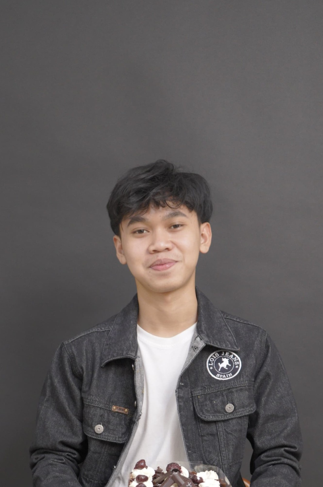
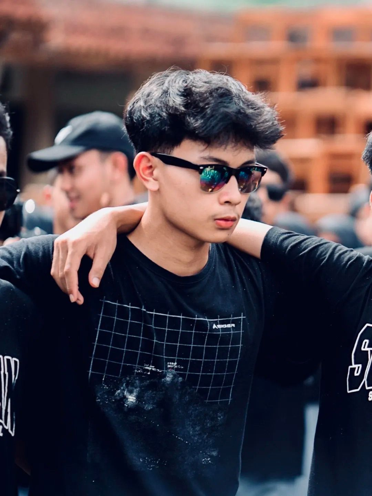
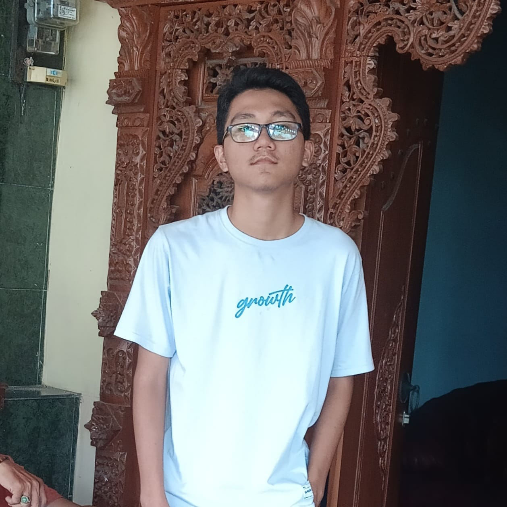
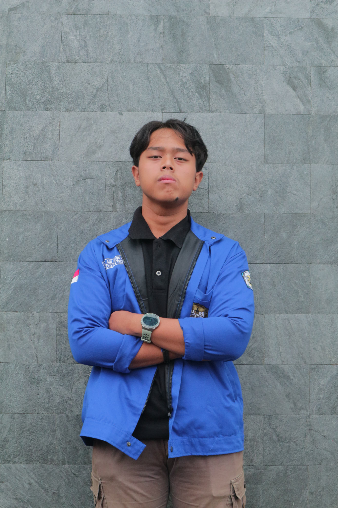

Profil Kami
Tani Cerdas adalah platform digital yang membantu petani Indonesia dengan teknologi sederhana dan mudah digunakan, untuk meningkatkan efisiensi, produktivitas, dan keberlanjutan pertanian.
Visi
Menjadi platform terdepan yang membantu petani Indonesia mencapai hasil panen terbaik dengan teknologi yang mudah digunakan.
Misi
- Menyediakan informasi pertanian yang akurat
- Menghubungkan petani dengan pasar
- Memberikan solusi praktis untuk meningkatkan produktivitas
Perjalanan Kami
14 Mei 2025
Memulai riset kebutuhan petani dan mengembangkan konsep platform digital.
21 Mei 2025
Mengembangkan versi beta dan testing di beberapa daerah pilot.
22 s.d 25 Mei 2025
Peluncuran resmi platform dan ekspansi ke berbagai daerah.
26 s.d 27 Mei 2025
Pengembangan fitur AI dan perluasan jangkauan nasional (opsional).
Tim Kami

Pancar Wahyu Setiabi
Founder & CEO
Informatika 2024

Najmi Zahrian
Ahli Pertanian
Informatika 2024

Muhammad Inas Pratama
CTO
Informatika 2024

Revaldi Enzha Agviandry
Head of Partnership
Informatika 2024

Yoga Adi Nugraha
COO
Informatika 2024